전자기사 (2013-09-28 기출문제)
1과목: 전기자기학
1. 그림과 같이 단면적 S[m2], 평균 자로의 길이 ℓ[m], 투자율 μ[H/m]인 철심에 N1, N2의 권선을 감은 무단 솔레노이드가 있다. 누설자속을 무시할 때 권선의 상호 인덕턴스는?
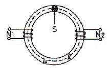
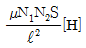
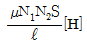
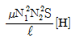
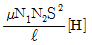
(정답률: 60%)

2. 원형코일이 평등자계 내에 지름을 축으로 하여 회전하고 있을 때 코일에 유기되는 기전력의 주파수는?
- 회전속도와 코일의 권수에 의해 결정된다.
- 자계와 지름 축 및 사이 각에 의해 변화된다.
- 회전수에 의해서만 결정된다.
- 회전방향과 회전속도에 의해 결정된다.
(정답률: 알수없음)
3. 도전율 σ, 유전율 ε인 매질에 교류전압을 가할 때 전도전류와 변위전류의 크기가 같아지는 주파수(f)는?
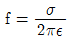
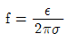
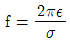
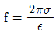
(정답률: 알수없음)
4. 분극세기 P, 전계 E, 전속밀도 D의 관계는? (단, ε0는 진공중 유전율이고, εr은 유전체의 비유전율이다.
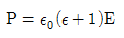
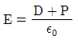
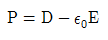
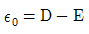
(정답률: 73%)
5. N회 감긴 환상코일의 단면적이 S[m2]이고 평균 길이가 ℓ[m]이다. 이 코일의 권수를 두 배로 늘이고 인덕턴스를 일정하게 하려고 할 때, 다음 중 옳은 것은?
- 단면적을 1/4한다.
- 길이를 2배로 한다.
- 비투자율을 1/2로 한다.
- 전류의 세기를 4배로 한다.
(정답률: 알수없음)
6. 비오-사바르의 법칙에서 자게의 세기 H와 거리 r의 관계를 옳게 표현한 것은?
- r에 반비례
- r에 비례
- r2에 반비례
- r2에 비례
(정답률: 알수없음)
7. 전계 E[V/m], 전속밀도 D[C/m2 ], 유전율 ε[F/m]인 유전체 내에 저장되는 에너지 밀도는 몇 [J/m3]인가?
- ED
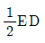
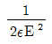
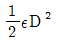
(정답률: 알수없음)
8. 비유전률 5, 비투자율 1인 유전체내에서의 전자파의 전파속도는 몇 m/s 인가?
- 1.13×107
- 1.34×107
- 1.13×108
- 1.34×108
(정답률: 알수없음)
9. 유기기전력에 대한 설명이 옳지 않은 것은?
- 시간에 따라 변하는 자기장 내에 놓인 폐회로에는 기전력이 유기되어 유도전류가 흐른다.
- 유도기전력의 방향은 자속의 변화를 억제하는 방향으로 생겨서, 변화되기 전 상태를 유지하려는 성질을 갖는다.
- 유도기전력의 크기는 쇄교자속의 시간적 변화량과 같다. 즉, 자속이 급격히 변화하면 이에 대한 반작용도 커져서 유기기전력도 커진다.
- 전자유도 현상에 의한 쇄교자속의 변화로 발생된 유도 전류방향은 자속의 변화를 돕는 방향으로 일어난다.
(정답률: 알수없음)
10. 비유전율, 3, 비투자율 3인 매질에서 전자기파의 진행속도는 진공에서의 속도의 몇 배인가?
- 1/9배
- 1/3배
- 3배
- 9배
(정답률: 75%)
11. 자기회로에서 자기저항의 관계로 옳은 것은?
- 자기회로의 단면적에 비례
- 자기회로의 길이에 비례
- 자성체의 비투자율에 비례
- 자성체의 비투자율의 제곱에 비례
(정답률: 50%)
12. 자유공간에서 전파 E(z,t)=103sin(ωt-βz)ay[V/m]일 때 자파 H(z,t)[A/m]는?
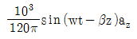
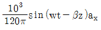
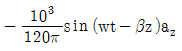
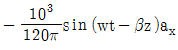
(정답률: 30%)
13. 자성체에 외부의 자계 H0를 가하였을 때 자화의 세기 J 와의 관계식은? (단, N은 감자율, μ는 투자율이다.)
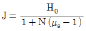
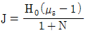
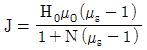
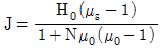
(정답률: 39%)
14. 전류 I[A]가 흐르는 반지름 a[m]인 원형코일의 중심선상의 자계의 세기는 몇 [AT/m]인가? (단, 중심축사의 거리는 x[m]라 한다.)
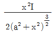
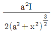
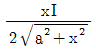
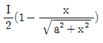
(정답률: 64%)
15. 옴의 법칙을 미분형태로 표시하면? (단, i는 전류밀도이고, ρ는 저항률, E는 전계이다.)
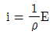
- i=ρE
- i=divE
- i=▽∙E
(정답률: 75%)
16. 공간 내 한 점의 자속밀도 B가 변화할 때 전자유도에 의하여 유기되는 전계 E에 관련된으로 옳은 것은?
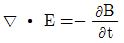
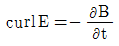
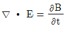
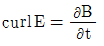
(정답률: 알수없음)
17. 평행판 공기콘덴서의 두 전극판을 전위차계에 접속했다. 콘덴서를 저전압으로 전지에 의해 전하니 전위차계가 작은 흔들림 θ를 나타내었다. 충전 후 전지를 분리하고 비유전율 εs=3인 전체를 콘덴서에 채우면 전위차계의 지시 θ‘는 어떻게 되는가?
- θ′=9θ
- θ′=θ/3
- θ′=θ
- θ′=3θ
(정답률: 54%)
18. 각각 ±Q[C]으로 대전된 두 도체간의 전위차를 전위계수로 표시한 것으로 알맞은 것은?
- (P11+P12-P22)Q
- (P11-P12+P22)Q
- (P11-2P12+P22)Q
- (P11+2P12-P22)Q
(정답률: 알수없음)
19. 2동심 구도체의 안반지름 a[m]와 바깥반지름 b[m]간의 도전율 σ[℧/m]인 저항으로 채워져 있을 때 두 구도체간의 저항은 몇 [Ω]인가?
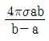
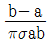
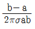
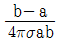
(정답률: 50%)
20. 철심이 든 환상 솔레노이드의 권수는 500회, 평균 반지름은 10cm, 철심의 단면적은 10cm2, 비투자율은 4000이다. 이 환상 솔레노이드에 2A의 전류를 흘릴 때 철심 내의 자속은?
- 8×10-3[Wb]
- 8×10-4[Wb]
- 4×10-3[Wb]
- 4×10-4[Wb]
(정답률: 알수없음)
2과목: 회로이론
21. S 평면 상에서 전달함수의 극점(pole)이 그림과 같은 위치에 있으면 이 회로망의 상태는?
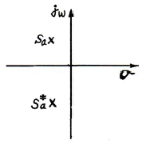
- 발진하지 않는다.
- 점점 더 크게 발진한다.
- 지속 발진한다.
- 감쇠 진동한다.
(정답률: 알수없음)
22. 단위 세기의 임펄스 함수인 δ(t)의 Fourier 변환은?
- 0
- 1
- u(t)
- 1-u(t)
(정답률: 75%)
23. 2개의 4단자망을 직렬로 접속했을 때 성립하는 식은?
- Z = Z1 +Z2
- Z = Z1 Z2
- Y = Y1 +Y2
- Z = Y1 +Y2
(정답률: 알수없음)
24. RLC 병렬회로가 공진 주파수보다 작은 주파수 영역에서 동작할 때, 이 회로는?
- 유도성 회로가 된다.
- 용량성 회로가 된다.
- 저항성 회로가 된다.
- 탱크 회로가 된다.
(정답률: 55%)
25. 다음 그림과 같은 구형파(square wave)의 실효값은?
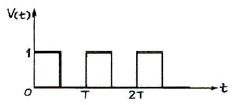
- T/2
- 1/2
- 1/√2
- T/√2
(정답률: 28%)
26. 구동점 임피던스(driving-point impedance) 함수에 있어서 극(pole)은?
- 아무런 상태도 아니다.
- 개방회로 상태를 의미한다.
- 단락회로 상태를 의미한다.
- 전류가 많이 흐르는 상태를 의미한다.
(정답률: 알수없음)
27. 다음과 같은 회로에 100[V]의 전압을 인가하였다. 최대전력이 되기 위한 용량성 리액턴스 XC의 값은? (단, R=10[Ω], ωL=5[Ω]이다.)
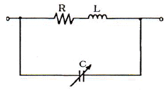
- 12[Ω]
- 12.5[Ω]
- 20[Ω]
- 25[Ω]
(정답률: 10%)
28. 저항 1[Ω]과 리액턴스 2[Ω]을 병렬로 연결한 회로의 역률은 약 얼마인가?
- 0.2
- 0.5
- 0.9
- 1.5
(정답률: 59%)
29. 인덕턴스 L1, L2가 각각 4[mH], 9[mH]인 두 코일간의 상호인덕턴스 M이 4[mH]라고 하면 결합계수 k는 약 얼마인가?
- 0.67
- 1.44
- 1.52
- 2.47
(정답률: 80%)
30. R-L 직렬회로에서 t=0일 때, 직류 전압 100[V]를 인가하면 흐르는 전류 i(t)는? (단, R=50[Ω], L=10[H]이다.)
- 2(1-e5t)[A]
- 2(1-e-5t)[A]
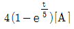
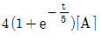
(정답률: 80%)
31. te-t의 laplace 변환을 하면?
- 1/(S+1)
- 2/(S+1)
- 2/(S+1)2
- 1/(S+1)2
(정답률: 67%)
32. 다음 그림의 변압기에서 R1에서 본 등가 저항을 구하면? (단, 이상 변압기로 가정)
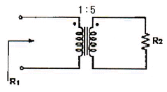
- 25R2
- √5R2
- R2/25
- R2/√5
(정답률: 74%)
33. cos(ωt+θ)의 Laplace 변환은?
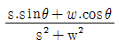
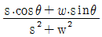
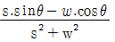
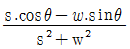
(정답률: 59%)
34. 다음 회로에 흐르는 전류 I는 약 몇 [A]인가? (단, E : 100[V], ω : 1000[rad/sec])
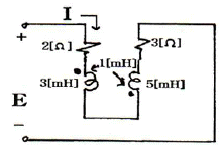
- 3.52
- 4.63
- 7.24
- 8.95
(정답률: 70%)
35. 그림과 같은 회로가 정저항 회로가 되기 위한 C 값은 몇 [μF]인가? (단, R=1[kΩ], L=200[mH]이다.)
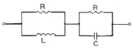
- 0.1[μF]
- 0.2[μF]
- 1[μF]
- 2[μF]
(정답률: 80%)
36. 내부저항 r[Ω]인 전원이 있다. 부하 R에 최대 전력을 공급하기 위한 조건은?
- r=2R
- R=r
- R=r2
- R=r3
(정답률: 알수없음)
37. 다음과 같은 병렬공진 주파수는?
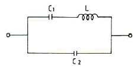
(정답률: 59%)
38. 다음 4단자 회로망에서의 y-Parameter Y11, Y21은?
(정답률: 알수없음)
39. 도선의 반지름이 4배로 늘어나면 그 저항은 어떻게 되는가?
- 4배 늘어난다.
- 1/4로 줄어든다.
- 1/16로 줄어든다.
- 2배 늘어난다.
(정답률: 70%)
40. RLC 직렬 공진회로에서 선택도 Q를 표시하는 식은? (단, ωr은 공진 각 주파수이다.)
- ωrC/R
- ωrL/R
- ωr/R
- ωrR/L
(정답률: 60%)
3과목: 전자회로
41. 다음 중 정현파 발진기가 아닌 것은?
- LC 하틀리 발진기
- LC 동조형 반결합 발진기
- 이상형발진기
- 블로킹발진기
(정답률: 50%)
42. A급 증폭기에 대한 설명으로 옳지 않은 것은?
- 충실도가 좋다.
- 효율은 50% 이하이다.
- 차단(cut off) 영역 부근에서 동작한다.
- 평균 전력손실이 B급이나 C급에 비해 크다.
(정답률: 47%)
43. 입력 저항이 가장 크게 될 수 있는 회로는?
- 부트스트랩 회로
- cascade 증폭기 회로
- 트랜지스터 chopper 회로
- 베이스 접지형 증폭기 회로
(정답률: 50%)
44. 수정발진기의 주파수 변동 원인과 그 대책에 대한 설명으로 옳지 않은 것은?
- 동조점의 불안정 : Q가 작은 수정공진자 사용
- 주위온도의 변화 : 항온조 사용
- 부하의 변동 : 완충 증폭기 사용
- 전원전압의 변동 : 정전압회로 사용
(정답률: 60%)
45. 트랜지스터의 고주파 특성으로 차단주파수 fa는?
- 베이스 주행시간에 비례한다.
- 베이스 폭의 자승에 비례한다.
- 정공의 확산계수에 반비례한다.
- 베이스 폭의 자승에 반비례하고 정공의 확산계수에 비례한다.
(정답률: 70%)
46. 다음 회로에서 입력전압 V1, V2와 출력전압 Vo의 관계는?
- Vo = V1 - V2
- Vo = V2 - V1
- Vo =1/2(V2 - V1)
- Vo = 1/2(V2 + V1)
(정답률: 50%)
47. FM 통신방식과 AM 통신방식을 비교했을 때, FM 통신방식에서 잡음 개선에 대한 설명으로 가장 적합한 것은?
- 변조지수와 잡음 개선과는 관계없다.
- 변조지수가 클수록 잡음 개선율이 커진다.
- 변조지수가 클수록 잡음 개선율이 적어진다.
- 신호파의 크기가 작을수록 잡음 개선율이 커진다.
(정답률: 59%)
48. 연산증폭기에서 차동출력을 0[V]가 되도록 하기 위하여 입력단자 사이에 걸어주는 것은?
- 입력 오프셋 전류
- 입력 바이어스 전류
- 출력 오프셋 전압
- 입력 오프셋 전압
(정답률: 80%)
49. 다음 회로에서 궤환율 β는 약 얼마인가?
- 0.01
- 0.09
- 0.25
- 0.52
(정답률: 60%)
50. 이미터 접지 트랜지스터 증폭기에서 β=9, 베이스 전류가 0.9[mA], 컬렉터 누설전류가 0.1[mA]이면 컬렉터 전류는 몇 [mA]인가?
- 6.2[mA]
- 7.5[mA]
- 9.1[mA]
- 10.5[mA]
(정답률: 40%)
51. 펄스 반복주파수 600[Hz], 펄스폭 1.5[μs]인 펄스의 충격계수 D는?
- 3×10-4
- 6×10-4
- 9×10-4
- 12×10-4
(정답률: 알수없음)
52. 전력증폭기에 대한 설명으로 옳은 것은?
- C급의 효율은 70~90[%] 정도이다.
- 전력효율은 η=(교류출력/교류입력)×100[%]이다.
- 최대 컬렉터손실이란 트랜지스터의 내부에서 전력 에너지로 소비되는 최대전력을 말한다.
- A급의 효율이 가장 낮아 전력증폭기에는 사용 못하고 단지 반송파 증폭이나 체배용으로 사용한다.
(정답률: 알수없음)
53. 다음 회로에서 리플 함유윻을 작게 하는 방법으로 적합하지 않은 것은?
- L을 크게 한다.
- C를 크게 한다.
- RL을 적게 한다.
- 교류입력 전원의 주파수를 높게 한다.
(정답률: 43%)
54. 다음 중 연산증폭기를 이용한 시미트(Schmitt) 트리거 회로를 사용하는 목적으로 가장 적합한 것은?
- 톱니파를 만들기 위하여
- 정전기를 방지하기 위하여
- 입력신호에 대하여 전압보상을 하기 위하여
- 입력전압 노이즈에 의한 오동작을 방지하기 위하여
(정답률: 72%)
55. 다음 회로의 명칭으로 가장 적합한 것은?
- 저역통과 필터
- 고역통과 필터
- DC-AC 변환기
- 시미트 트리거
(정답률: 알수없음)
56. 다음 회로에서 제너 다이오드에 흐르는 전류는? (단, 제너 다이오드의 제너 전압은 10[V]이다.)
- 0.6[A]
- 0.7[A]
- 0.8[A]
- 1.2[A]
(정답률: 알수없음)
57. 적분 회로로 사용 가능한 회로는?
- 고역통과 RC 회로
- 대역통과 RC 회로
- 대역소거 RC 회로
- 저역통과 RC 회로
(정답률: 알수없음)
58. 전류 궤환 증폭기의 출력 임피던스는 궤환이 없을 때와 비교하면 어떻게 되는가?
- 증가한다.
- 감소한다.
- 변화가 없다.
- 입력신호의 크기에 따라 증가 또는 감소한다.
(정답률: 알수없음)
59. 어떤 연산증폭기의 개루프 전압이득은 100000이고, 동상이득은 0.2일 때 동상신호제거비(CMRR)은 약 몇 [dB]인가?
- 57[dB]
- 60[dB]
- 114[dB]
- 120[dB]
(정답률: 알수없음)
60. 다음 연산증폭기 회로에서 출력임피던스는 약 몇 [Ω]인가? (단, 개루프 전압증폭도 A는 10000이고, 출력임피던스는 50[Ω]이다.)
- 0.1[Ω]
- 0.5[Ω]
- 1.0[Ω]
- 5.0[Ω]
(정답률: 알수없음)
4과목: 물리전자공학
61. 서미스터(Thermistor)는 저항이 무엇에 대하여 비직선적으로 변하는 소자인가?
- 전류
- 전압
- 온도
- 주파수
(정답률: 65%)
62. 균등 전계내 전자의 운동에 관한 설명 중 옳지 않은 것은?
- 전자는 전계와 반대 방향의 일정한 힘을 받는다.
- 전자의 운동 속도는 인가된 전위차 V의 제곱근에 반비례한다.
- 전계 E에 의한 전자의 운동 에너지는 1/2mv2[J]이다.
- 전위차 V에 의한 가속전자의 운동에너지는 eV[J]이다.
(정답률: 50%)
63. 금속의 일함수란?
- 표면 전위 장벽 EB와 Fermi 준위 EF와의 차이에 해당하는 에너지이다.
- 금속에서의 열전자 방출에 관한 전류와 온도와의 관계식이다.
- 전자의 구송 에너지와 같다.
- 최소 한도의 전자류 방출에 필요한 금속의 양이다.
(정답률: 알수없음)
64. 진성 반도체에서 전자나 전공의 농도가 같다고 할 때 전도대의 준위를 0.4[eV], 가전자대의 준위가 0.8[eV]라 하면 Fermi 준위는 몇 [eV]인가?
- 0.32[eV]
- 0.6[eV]
- 1.2[eV]
- 1.44[eV]
(정답률: 58%)
65. 정격 100[V], 50[W] 백열전구의 필라멘트를 0.1[sec] 사이에 통과하는 전자수는? (단, 전자의 전하량 e=1.6×10-19[C])
- 3.125×1017 [개/초]
- 6.24×1016 [개/초]
- 62.4×1017 [개/초]
- 3.125×1016 [개/초]
(정답률: 알수없음)
66. 접합형 다이오드의 공핍층을 설명한 것으로 옳지 않은 것은?
- 이온이 존재한다.
- 다수 반송자가 많은 층이다.
- 전자도 정공도 없는 층이다.
- 전자와 정공의 확산에 의해 생긴다.
(정답률: 30%)
67. 실리콘 단결정 반도체에서 P형 불순물로 사용될 수 있는 것은?
- P(인)
- As(비소)
- B(붕소)
- Sb(안티몬)
(정답률: 40%)
68. 저온에서 반도체 내의 캐리어(carrier) 에너지 분포를 나타내는데 가장 적절한 것은?
- 2차 분포함수
- Fermi-Dirac 분포함수
- Bose-Einstein 분포함수
- Maxwell-Blotzmann 분포함수
(정답률: 60%)
69. 평행판 A, B 사이의 거리가 1[cm]이며, 판 B에 대한 판 A의 전위는 +100[V]이다. 초기속도 0으로 판 B를 출발한 전자가 판 A에 도달하는데 걸리는 시간은 약 몇 [sec]인가?
- 3.37×10-7
- 1.69×10-7
- 1.69×10-9
- 3.37×10-9
(정답률: 알수없음)
70. 궤도전자의 파동함수로서 전자의 에너지를 결정하는 것은?
- 주양자수
- 방위양자수
- 자기양자수
- 스핀양자수
(정답률: 37%)
71. 파울리(pauli)의 배타 원리에 관한 설명으로 옳은 것은?
- 전자는 낮은 준위의 양자상태에서 높은 준위의 양자상태로 되려는 성질이 있다.
- 동일한 양자 상태에 다수의 전자기 있기를 원한다.
- 동일한 양자 상태에 1개의 전자가 있기를 원한다.
- 전자의 스핀(spin)은 평형을 이루도록 상호 작용을 한다.
(정답률: 46%)
72. 다음 에너지 대역에 대한 설명 중 옳은 것은?(오류 신고가 접수된 문제입니다. 반드시 정답과 해설을 확인하시기 바랍니다.)
- 전도대와 가전자대 사이 영역을 금지대라 한다.
- 원자간 거리가 멀어져 고립되면 에너지 준위의 갈라짐이 발생한다.
- 가전자로 채워져 있는 허용 에너지대를 가전자대라 한다.
- 금지 대역폭(energy band gap)의 크기에 따라 도체, 반도체, 절연체로 구분한다.
(정답률: 알수없음)
73. 금속체 내에 있는 전자가 표면장벽을 넘어서 금속 밖으로 방출되기 위하여 필요한 최소의 에너지를 가리키는 것은?
- 광에너지
- 운동에너지
- 페르미준위
- 일함수
(정답률: 63%)
74. 반도체 내의 캐리어의 이동도(μ)와 확산 계수(D) 사이의 관계로 옳은 것은?
(정답률: 알수없음)
75. FET에서 차단주파수 fT를 높이는 방법으로 옳지 않은 것은?
- gm을 크게 한다.
- n 채널을 사용한다.
- 채널 길이를 길게 한다.
- 정전용량을 적게 한다.
(정답률: 37%)
76. 물이 담긴 컵 안에 잉크 방울을 떨어뜨렸을 때 잉크가 주변으로 번져나가는 것을 볼 수 있다. 이러한 현상은 입자들이 농도가 높은 곳에서 낮은 곳으로 이동하여 균일하게 분포하려는 성향에 기인하는 것인데 이런 입자의 움직임을 무엇이라 하는가?
- 확산
- 드리프트
- 이동성
- 이온 결합성
(정답률: 75%)
77. 다음 중 플라즈마(Plasma)와 같은 기체 상태의 경우 적용될 수 있는 분포식은?
- Einstein의 관계식
- Schröinger 방정식
- Maxwell-Boltzmann 방정식
- 1차원의 Poisson 방정식
(정답률: 80%)
78. 선형적인 증폭을 위하여 트랜지스터의 동작점은?
- 포화영역 부근에 세워져야 한다.
- 차단영역 부근에 세워져야 한다.
- 활성영역 부근에 세워지기만 하면 된다.
- 차단영역과 포화영역 중간 지점에 세워져야 한다.
(정답률: 42%)
79. 전계의 세기 E=105 [V/m]의 평등 자계 중에 놓인 전자에 가해지는 전자의 가속도는 약 얼마인가?
- 1.602×10-14[m/s2]
- 1600[m/s2]
- 5.93×105[m/s2]
- 1.75×1016[m/s2]
(정답률: 58%)
80. 진성반도체에서 온도가 상승하면 페르미 준위는 어떻게 되는가?
- 가전자대 쪽으로 접근한다.
- 도너 준위에 접근한다.
- 전도대 쪽으로 접근한다.
- 금지대 중앙에 위치한다.
(정답률: 93%)
5과목: 전자계산기일반
81. 순서도의 사용에 대한 설명 중 옳지 않은 것은?
- 프로그램 코딩의 직접적인 자료가 된다.
- 프로그램의 내용과 일처리 순서를 파악하기 쉽다.
- 프로그램 언어마다 다르게 표현되므로 공통적으로 사용할 수 없다.
- 오류 발생시 그 원인을 찾아 수정하기 쉽다.
(정답률: 알수없음)
82. 4단계 파이프라인에서 클록주기가 1[μs]일 때 10개의 명령어를 실행하는데 걸리는 시간은?
- 7[μs]
- 13[μs]
- 18[μs]
- 25[μs]
(정답률: 67%)
83. 서브루틴을 호출하는 "CALL" 명령어가 실행되는 동안에 수행되는 동작이 아닌 것은?
- 스택포인터 내용을 감소시킨다.
- 복귀할 주소를 스택에 저장한다.
- 호출할 주소를 PC에 적재한다.
- 호출할 주소를 스택으로부터 인출한다.
(정답률: 알수없음)
84. 연산장치에 대한 설명으로 옳은 것은?
- 누산기, 가산기, 데이터 레지스터, 상태 레지스터 등으로 구성되어 있다.
- 기억 레지스터, 명령 레지스터, 명령 해독기, 명령 계수기 등으로 구성되어 있다.
- 프로그램과 데이터를 보관하고 있다가 필요할 때 꺼내어 사용하는 기능이다.
- 처리 대상이 되는 데이터와 처리 과정에 있는 데이터 또는 최종 결과를 저장한다.
(정답률: 73%)
85. 다음 중 명령어의 주소 지정방식이 아닌 것은?
- 즉치(immediate) 주소지정
- 오퍼랜드 주소지정
- 레지스터 주소지정
- 인덱스 주소지정
(정답률: 알수없음)
86. 마스크(mask)를 이용하여 비수치 데이터의 불필요한 부분을 제거하는데 사용하는 연산은?
- AND
- OR
- EX-OR
- NOR
(정답률: 70%)
87. 마이크로프로세서 내부에 존재하지 않는 장치는?
- 제어장치(control unit)
- 산술논리장치(arithmetic logic unit)
- 레지스터(register)
- 기억장치 직접 접근 제어기(direct memory access controller)
(정답률: 64%)
88. DMA에 대한 설명으로 옳지 않은 것은?
- 데이터의 입출력 전송이 직접 메모리 장치와 주변 장치사이에서 이루어지는 인터페이스이다.
- 기억장치와 외부장치와의 교환을 직접 행할 수 있도록 제어하는 회로이다.
- DMA는 정보 전송시 중앙처리장치의 레지스터를 경유하여 작동된다.
- DMA 동작은 DMA 인터페이스를 위한 장치 주소와 명령 코드를 포함한 입출력 명령으로 구성된 프로그램에 의해 이루어진다.
(정답률: 알수없음)
89. 부프로그램(Subprogram)에 관한 설명으로 옳지 않은 것은?
- 큰 프로그램을 모듈 프로그램으로 나누어 계층 구조를 갖도록 구성한다.
- 주프로그램 설계시 부프로그램의 자세한 설계는 필요하지 않다.
- 부프로그램은 주프로그램에 상관없이 처리될 수 있다.
- 하나의 부프로그램은 여러 개의 부프로그램을 포함할 수 있다.
(정답률: 알수없음)
90. CPU가 프로그램을 수행하는 동안 결과를 캐시기억장치에 쓸 경우 주기억장치와 캐시기억장치의 데이터가 서로 일치하지 않은 경우가 발생할 수 있는 방식은?
- 나중 쓰기(write-back) 방식
- 즉시 쓰기(write-through) 방식
- 최소 최근 사용(LRU) 방식
- 최소 사용 빈도(LFU) 방식
(정답률: 알수없음)
91. 2진수 (111110.1000)2를 10진수와 16진수로 나타낸 것 중 옳은 것은?
- (62.5)10, (3E.8)16
- (60.5)10, (3E.4)16
- (62.5)10, (3E.4)16
- (60.5)10, (3E.8)16
(정답률: 55%)
92. [그림]에 대한 설명으로 옳지 않은 것은?
- 클록신호가 0에서 1로 바뀔 때만 변화가 일어난다.
- 래치를 보완한 회로이다.
- SR 래치이다.
- RS 플립플롭이다.
(정답률: 50%)
93. 2진 카운터에 대한 설명으로 옳지 않은 것은?
- 입력 펄스에 따라 레지스터의 상태가 미리 정해진 순서대로 변경된다.
- 입력 펄스의 시간 간격은 일정해야 한다.
- 카운터는 동기적 혹은 비동기적으로 동작한다.
- 비동기 카운터를 리플(ripple) 카운터라고 한다.
(정답률: 42%)
94. 컴퓨터의 CPU가 앞으로 수행될 명령어를 기억 장치에서 미리 인출하여 Cpu 내부의 대기열에 넣어 놓음으로써 수행속도를 향상시키는 기법을 무엇이라고 하는가?
- Spooling
- Instruction prefetch
- Paging
- Synchronization
(정답률: 55%)
95. 하나의 프로세서를 여러 개의 서브프로세서로 나누어 각 서브프로세서가 동시에 서로 다른 데이터를 취급하도록 하는 개념과 거리가 먼 것은?
- 멀티프로세싱
- 멀티프로그래밍
- 파이프라인닝
- 어레이 프로세싱
(정답률: 알수없음)
96. 다음은 실행 사이클 중에서 어떤 명령을 나타낸것인가?
- STA 명령
- AND 명령
- LDA 명령
- JMP 명령
(정답률: 9%)
97. C 프로그램에서 선행처리기에 대한 설명 중 틀린 것은?
- 컴파일하기 전에 처리해야 할 일들을 수행하는 것이다.
- 상수를 정의하는 데에도 사용한다.
- 프로그램에서 "#" 표시를 사용한다.
- 유틸리티 루틴을 포함한 표준 함수를 제공한다.
(정답률: 73%)
98. 전파 지연 시간이 가장 적은 IC는?
- TTL
- ECL
- CMOS
- Schottky TTL
(정답률: 알수없음)
99. 컴퓨터의 구조 중 스택 구조에 대한 설명으로 옳지 않은 것은?
- 스택 메모리의 번지 레지스터로서 스택 포인터가 있으며 LIFO로 동작한다.
- 메모리에 항목을 저장하는 것을 PUSH라 하고 빼내는 동작을 POP이라고 한다.
- PUSH, POP 동작시 SP를 증가시키거나 감소시키는 문제는 스택의 구성에 따라 달라질 수 있다.
- PUSH, POP 명령에서 스택과 오퍼랜드 사이의 정보 전달을 위해서는 번지 필드가 필요 없다.
(정답률: 62%)
100. 다음 명령 형식 중 데이터의 처리가 누산기(accumulator)에서 이루어지는 형식은?
- 스택 구조 형식
- 1번지 명령 형식
- 2번지 명령 형식
- 3번지 명령 형식
(정답률: 알수없음)
M = μN1N2S/ℓ
여기서, μ는 투자율, N1과 N2는 권선의 총바퀴수, S는 단면적, ℓ은 평균 자로의 길이이다.
따라서, 보기 중에서 정답인 ""는 위의 공식에 따라 계산한 값이다.